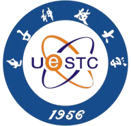

contact
lzc [at] fzu.edu.cn Preferred
Research enquiries
Office & Lab
DIG@FZUCollege of Computer and Data Science, Fuzhou University, No. 2 Wulongjiang North Avenue, Fuzhou University Town, Fuzhou, Fujian, China
Associate Research ProfessorGroup Leader, DIG@FZU
Born in Fuzhou, China, I returned home in late 2025 after several years abroad. I’m now an Associate Research Professor at Fuzhou University’s College of Computer and Data Science. I lead the Data Intelligence and Interdisciplinary Information Group (DIG@FZU). I’m a member of the Fujian Key Laboratory of Network Computing and Intelligent Information Processing, where I’m mentored by Professor Xing Chen.
We develop efficient ways to learn from time series and spatio-temporal data when measurements are missing or patterns change. For example, we can estimate a missing air-quality reading from nearby stations or forecast rush-hour congestion from recent traffic speeds. Our broader interests include GeoAI and AI for science and health. My research is supported by China’s MOE National Overseas Talent Recruitment Program and the NSFC Young Scientists Fund (Category C).
I studied Computer Science in China, earning my B.S. at UESTC 
My roots are here.

High School · Science Track
My home away from home.
B.S. in Computer Science
Where my research took shape.

Ph.D. in Computer Science & Research Fellow
Advised by Professors Christian S. Jensen, Hua Lu, Huan Li, and Dalin Zhang
Research Assistant
Working with Professors Xu Cheng and Xiufeng Liu

Junior Visiting Research Fellow
Back to where it all began.

Associate Research Professor
Group Leader, Data Intelligence and Interdisciplinary Information Group (DIG@FZU)
I welcome enquiries from self-motivated students considering postgraduate study or seeking research experience in their first two undergraduate years. At DIG@FZU, I work closely with students to turn their interests into research questions. When you write, include your CV and tell me about a problem you’d like to explore.
lzc [at] fzu.edu.cn Preferred